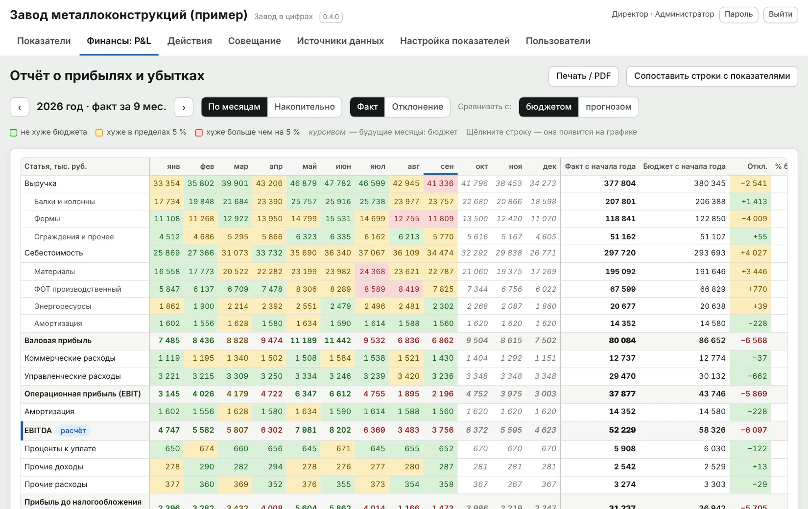

Программы, которые доводят отклонение от плана до действия
Две собственные программы — «Завод в цифрах» и «План-факт». Придумал, спроектировал и довёл до установщика сам.
17 лет в производстве и качестве: автокомпоненты, бытовая техника, ЖБИ. Программы выросли из этой практики: в них то, чего не хватало мне самому как руководителю завода.
1«Завод в цифрах»
Весь завод на одном экране из тех файлов Excel, что уже ведутся. Каждое отклонение доводится до причины, действия с ответственным и сроком и результата через месяц.

- Производство и качествовыпуск, брак, простои — каждый день
- Причины и действияТОП-3, статус, срок, эффект
- Финансы: P&Lфакт к бюджету, EBITDA, чистая прибыль
- Персоналчисленность, текучесть, выработка, ФОТ
- Любая отрасль123 готовых показателя по 15 блокам
- ИИ-ассистентотчёт для директора по выбранным показателям
Условные данные. Числа считает программа, текст пишет модель, решает человек.
2«План-факт»
Контроль выполнения плана каждый день: план по дням, факт по сменам с причинами, планёрка — ежедневное совещание по плану — по шагам с протоколом, заказы и готовность к отгрузке.

- План и фактпо сменам, с телефона
- Планёркапо шагам, протокол формируется сам
- Заказыготовность к отгрузке
- МодулиОТК, простои по QR, время операций
Обе программы ставятся на компьютер предприятия и работают в локальной сети, без облака и IT-проекта.
Программы выросли из практики управления заводом
Сначала были аудит, совещания и регламенты на действующих предприятиях — потом инструменты, которые их поддерживают.
Аудит и антикризисное управление
Аудит действующего предприятия, система совещаний, узкие места, план развития и улучшений.
Система документов предприятия
Регламенты, KPI, отчётность и документы, связанные в единую систему управления: 116 документов и 27 Excel-инструментов.
Как я строю системы
Принципы управления, устройство программы «Завод в цифрах», инженерные практики и порядок выпуска версий.
Как росли системы: от Excel до программы
Каждый следующий инструмент вырастал из ограничений предыдущего. Программы «План-факт» и «Завод в цифрах» выходят небольшими версиями: в каждой одна законченная возможность, автотесты и документация.
Показать путь и версии программ
Положения, KPI, отчётность, планирование. Из этой практики вырос комплект на 116 документов и 27 расчётных инструментов.
MRP по уровням полуфабрикатов, календарь оборудования, сверхурочные ближе к сроку. Всё на формулах, файл собирается программой.
Веб-приложение на Google Таблицах: отметка простоя с телефона, автозакрытие, % простоя от планового времени, цели с историей.
Свой сервер: загрузка Excel без задвоения, роли и вход по паролю, журнал аудита, режим «Годы». Из него вырос «Завод в цифрах».
Планирование, факт, планёрка, качество, простои, время операций, заказы и готовность к отгрузке, план по ресурсам. Установщики для Windows и Mac, лицензии, обновления.
Читает файлы Excel завода как есть и превращает их в показатели с целью и трендом. По показателю вне цели — три главные причины, действия с ответственным, сроком и статусом, оценка эффекта, совещание и протокол, P&L. Программа сверяет загруженное с итогами файлов и не складывает разное молча. Экраны настраиваются под директора, финансиста, директора по персоналу. С версии 0.5.6 — ИИ-ассистент аналитика: по выбранным показателям и периоду пишет текст отчёта, а числа считает программа.
Дальше: модуль «Отгрузки» и себестоимость.
Каждое отклонение — действие
Недовыполнение без причины не закрывается. У причины есть мероприятие, ответственный и срок, статус виден на совещании.
История, а не правка задним числом
Цели, графики и план фиксируются с датой начала действия. Отчёт за март в сентябре показывает те же цифры.
Сначала процесс, потом цифра
Инструмент появляется там, где уже понятен процесс и владелец. Поэтому им пользуются каждый день, а не только на проверке.